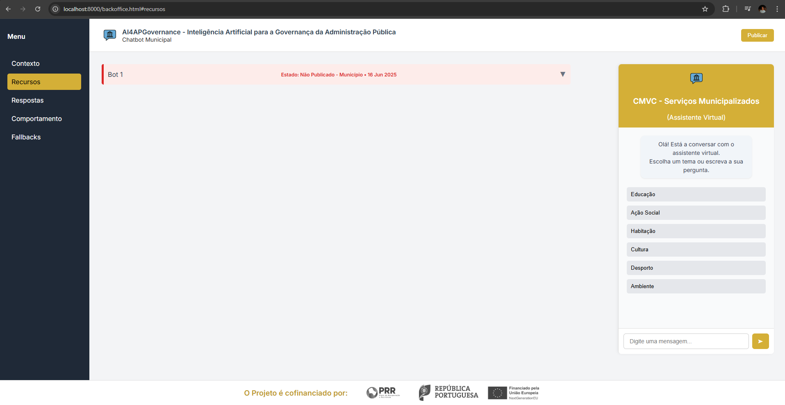
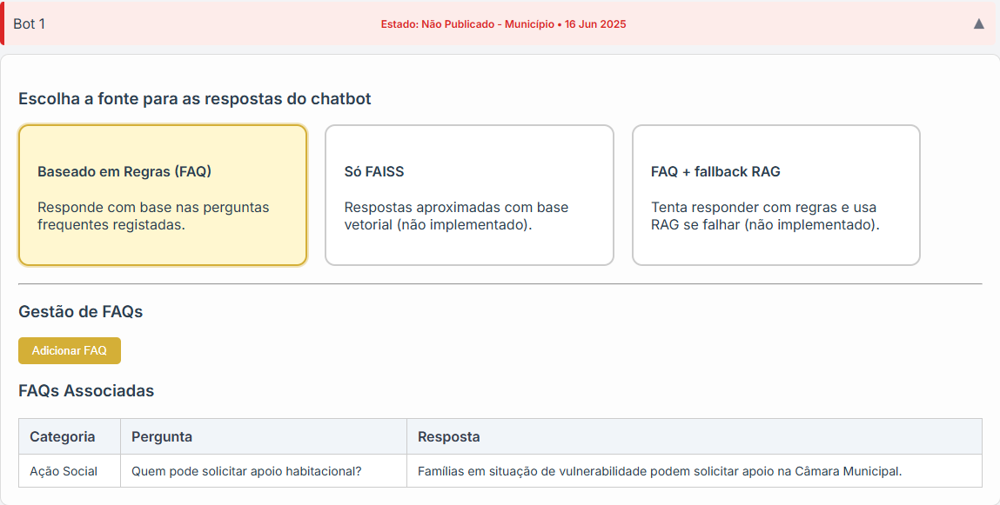
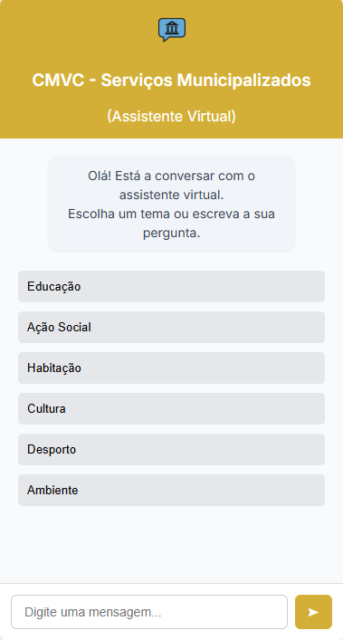

Contexto do Projeto
Este projeto foi desenvolvido no âmbito da iniciativa AI4APGovernance, que visa explorar o potencial da Inteligência Artificial para melhorar os serviços públicos municipais. A interface aqui apresentada serve como backoffice para gerir as interações e recursos do chatbot municipal.
Objetivo
Permitir aos gestores municipais configurar fontes de resposta, adicionar perguntas frequentes (FAQs), associar documentos relevantes e gerir o comportamento do assistente virtual de forma autónoma.
Funcionamento Técnico
- O chatbot utiliza uma base de dados PostgreSQL para armazenar FAQs, documentos e relações.
- A API backend é construída com Flask (Python) e oferece rotas REST para comunicação entre front e backend.
- Há suporte para inserção manual de FAQs ou via ficheiro .docx.
- O sistema suporta seleção de fontes como: FAQ (regras), FAISS (vetores) ou híbrido (com fallback).
Exemplo da Interface Backoffice

A imagem acima mostra a interface principal do sistema, com o menu lateral, painel de gestão de bots e o chat lateral.
Gestão de Fontes e FAQs

Nesta secção, o gestor pode escolher entre diferentes fontes de resposta, inserir FAQs manualmente ou carregar documentos com FAQs.
Simulador de Chat

À direita, encontra-se o simulador de chat, que permite testar o comportamento do bot e validar as respostas registadas.